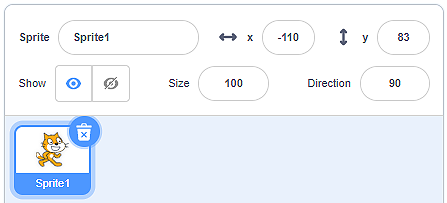

Визуален програмен език Скрач¶
Скрач е визуален програмен език, направен за деца. Програмирането в Скрач не изисква писане на команди. За да създадете програма, можете просто да подредите блоковете в правилен ред (подобно на пъзел или на LEGO).
- Резултатът от програмата, която съдържа само една команда
 изглежда така:
изглежда така:  .
.
Има два начина, по които можем да използваме Скрач (версия 3):
чрез свалянето на файла за инсталиране от https://scratch.mit.edu/download и чрез инсталирането му на вашето лично дигитално устройство (десктоп версията на програмата);
работейки онлайн на уебсайта https://scratch.mit.edu (онлайн версия на програмата).
И двата начина имат своите предимства и недостатъци.
Ако инсталираме десктоп версията на нашето лично дигитално устройство, ще работим по-бързо и по-удобно, най-вече защото няма да зависим от качеството на интернет връзката или от поддръжката на онлайн платформата на Скрач (която по това време не е на разположение.
Ако използваме онлайн версията, трябва да създадем свой акаунт. Имайки акаунт, можем да запазваме проектите си на онлайн платформата и да имаме достъп до тях от всяко устройство, свързано с интернет. В допълнение към това удобство, онлайн платформата на Скрач ни предлага възможността да запазим части от нашите програми в Раницата и да ги използваме отново, когато се нуждаем от тях. Допълнително предимство е способността да публикуваме програми. След публикуване програмата ни става видима от други потребители на Скрач; наричаме ги Скрачъри. Така както те могат да виждат и миксират (адаптират) нашите програми (проекти), така и ние можем да виждаме и миксираме техните. Също така можем да поискаме помощ от платформата. Да помагаме на други Скрачъри е в духа на тази онлайн общност.
Потребителският интерфейс на две различни версии на Скрач изглеждат почти еднакво; обаче онлайн версията има всички елементи на инсталираната версия и някои други функции. На тази страница ще покажем елементите на онлайн платформата на Скрач.
Онлайн платформа Скрач¶
Програмите, създадени на онлайн платформата Скрач, се наричат проекти. Проектите се създават чрез кликването на бутона създай. Това ще отвори потребителския интерфейс, което изглежда така:

Лента с инструменти;
Раздели Код, Костюми и Звуци;
Селекция от блок категории, които могат да бъдат добавени към работното пространство;
Пространство, където можем да създадем нашите програми (натрупвайки блокове), които са свързани с активния спрайт (герой) или със сцената;
Раница
Списък с основните параметри (характеристики) на Спрайта – активният спрайт е отбелязан със синя рамка около неговото описание;
Списък с фонове за сцената
Сцената
 Горната част на интерфейса е зает от лентата с инструменти.
Горната част на интерфейса е зает от лентата с инструменти.

Кликвайки на Скрач, ще отворим страницата на акаунта на потребителя, който в момента е вписан (в нашия случай това би било страницата на акаунта на линия). На тази страница можем да видим съответната информация, новини, предложения за проекти от други Скрачъри, както и получени съобщения (Съобщения) и програми, направени от собствените на акаунта (Моите неща);
Кликвайки на иконата Земя, ще отворим списък с падащи менюта, от който можем да изберем езика, на който всички елементи от интерфейса на потребителя ще се показват;
Файл предлага няколко важни опции: започването на нов проект (нов), запазването на проект (запази сега), запазването на проект като копие на вече съществуващ такъв (запази като копие), зареждане на програма от личния ни компютър (зареди от твоя личен компютър) и свалянето на проект на личния ни компютър (запази на твоя компютър);
Редактиране ни позволява да възстановим изтрит спрайт с всичките му блокове (възстанови), също и да включим турбо форма за управление на програмата (включи турбо форма). Ако не искаме програмата да оперира бързо, можем просто да изключим турбо формата (изключи турбо форма);
Кликвайки на Инструкции, ще отворим страница, откъдето можем да изберем една от инструкциите как да създадем програми в Скрач;
В това поле ще въведем името на проекта;
Кликвайки на бутона Сподели, ще направим проекта ни публично наличен за други Скрачъри. Това е, когато страницата за този конкретен проект е създадена;
Виж страницата на проекта ни закарва до страницата на проекта ни, където трябва да въведем: инструкции как да използваме програмата (инструкции) и бележки и информация за създателите (бележки и кредити). На тази страница можем да управляваме програмата, както и да се върнем в програмиращата среда чрез кликване на бутона виж отвътре.
Кликвайки на файл иконата (моите неща), ще отворим страницата с всичките програми, създадени от потребителя, който е вписан в момента.
Средната част на интерфейса на потребителя е заета от разделите Код, Костюми и Звуци..

Разделът Код съдържа категории от команди с подредени в списък блокове, които принадлежат към тях (цветът на блока съответства на цвета на категорията, към която принадлежи). Тези блокове са свързани към активирания спрайт и към програмиращото пространство, в което блоковете се поставят чрез влачене и пускане върху пространството;
Разделът Костюми съдържа редактор с инструменти за добавяне, изтриване и адаптиране на костюмите, принадлежащи на активния спрайт;
Разделът Звуци съдържа редактор с инструменти за добавяне, изтриване, пускане и основно обработване на аудио записи.
Долният десен ъгъл на сцената е зает от добавяне/изтриване на спрайтове и от фонове за сцената. Спрайтовете и фоновете за сцената могат да бъдат добавени от библиотеката Спрайт/Фон – Избери Спрайт/Фон, могат да бъдат нарисувани – Рисувай, можем да оставим Скрач да ни изненада и да избере вместо нас спрайт/фон – Изненада, също така можем да ги качим от личния си компютър – Качи спрайт/фон.

Сцената е мястото, в което програмата се изработва. То е широко 480 стъпки (пиксели) и дълго 360 стъпки (пиксели). Позицията на спрайта се определя от две стойности Х и У.
x: определя позицията на спрайта по ширината на сцената (ляво или дясно);
y: определя позицията на спрайта по дължината на сцената (горе или долу);

Следователно стойностите на Х: и У: зависят от разположението на спрайта. Ако искаме нашият спрайт да бъде в центъра на сцената, стойностите трябва да бъдат Х: 0 и У: 0. Информацията на настоящата локация на спрайта може да бъде видяна в списъка на спрайтовете, в параметрите на спрайта.
- В горната лява част на сцената.
- Браво! Разбирате отлично как стойностите на X: и Y: определят позицията на спрайта на сцената!
- В долната лява част на сцената.
- Вижте фигурите, където разделихме сцената на четири части и ги боядисахме в различни цветове. Ще забележите, че в зелената част на сцената стойностите са X> 0 и Y> 0; в червената част на сцената стойностите са X <0 и Y> 0; в синята част на сцената стойностите са X <0 и Y <0; в жълтата част на етапа стойностите са X> 0 и Y <0. Сега можете ли да отговорите правилно на нашия въпрос?
- В горния десен ъгъл на сцената.
- Вижте фигурите, където разделихме сцената на четири части и ги боядисахме в различни цветове. Ще забележите, че в зелената част на сцената стойностите са X> 0 и Y> 0; в червената част на сцената стойностите са X <0 и Y> 0; n в синята част на етапа стойностите са X <0 и Y <0; в жълтата част на етапа стойностите са X> 0 и Y <0. Сега можете ли да отговорите правилно на нашия въпрос?
- В долната дясна част на сцената.
- Вижте фигурите, където разделихме сцената на четири части и ги боядисахме в различни цветове. Ще забележите, че в зелената част на сцената стойностите са X> 0 и Y> 0; в червената част на сцената стойностите са X <0 и Y> 0; n в синята част на етапа стойностите са X <0 и Y <0; в жълтата част на етапа стойностите са X> 0 и Y <0. Сега можете ли да отговорите правилно на нашия въпрос?
Q-10: Виж внимателно информацията за разположението на спрайта. Къде е той в момента?
Участие в онлайн общността Скрач¶
Независимо дали сме създали програма (проект) в онлайн платформата на Скрач или чрез десктоп версията, можем да дадем програмата си на разположение за други хора, заинтересовани в програмирането в този визуален програмен език.
И в двата случая ние трябва да:
Имаме акаунт в онлайн платформата на Скрач;
Качим програмата си на платформата (програми, създадени чрез офлайн версията на Скрач трябва да бъдат качени на платформата: Файл – Качи от твоя компютър;
Публикуваме проекта си чрез кликването на бутона Сподели
 .
.
За да помогнем на други скрачъри да разберат и да използват нашата програмат добре, важно е да напишем подробно описание на страницата на проекта. Можем да достигнем до тази страница, като кликнем върху бутона Виж страницата на проекта.
Така други потребители на Скрач виждат страницата на нашия проект:

Можем да видим, че всеки потребител на онлайн платформата на Скрач може да миксира нашия проект. Те просто кликват на бутона Миксирай и могат да подобряват, променят и публикуват новосъздадената програма. Информацията за броя на гледания, миксирания, харесвания и др. може да бъде видяна на началната страница.
Онлайн платформата на Скрач е отдадена на опазването на духа на общността на Скрачърите. Натискайки бутона Докладвай, потребителите могат да докладват неуместно съдържание, коментари, дискусии и други. След получаването на докладването екипът на Скрач ще погледне проблематичното съдържание и ако то не отговаря на ръководните принципи на общността (https://en.scratch-wiki.info/wiki/Community_Guidelines) ще бъде премахнато от платформата.